Hier lernst du nun wichtige reale Eigenschaften von mechanischen Wellen und wechselst anschließend zu den faszinierenden Phänomenen der Elektromagnetik.
Bearbeite alle Aufgaben auf dieser Internetseite. Wenn du fertig bist, schreibe deinen Namen links unten in das Namensfeld und klicke auf den Button "Ergebnisse anzeigen" darunter, um deine Antworten abzusenden. Auf der letzten Auswertungsseite findest du dann all deine Antworten. Außerdem wird parallel automatisch eine kleine Text-Datei mit den Ergebnissen heruntergeladen.
Der Doppler-Effekt ist in dieser Planung Leistungsfachstoff. Im Basisfach muss diese quantitative Behandlung nicht eingeplant werden.
Jedes Kind kennt den typischen, zunächst ansteigenden und dann sinkenden Ton, wenn ein Krankenwagen mit aktivierter Sirene vorbeifährt. Diesen Effekt bezeichnet man als Dopplereffekt. Man unterscheidet dabei zwei Hauptfälle:
Ein Schallsender bewegt sich mit $v_S$ auf einen ruhenden Empfänger zu. Der Sender jagt seinen eigenen ausgesandten Wellenfronten hinterher, weshalb diese in Fahrtrichtung „zusammengeschoben“ werden. Der Empfänger hört eine verkürzte Wellenlänge $\lambda_E$ und somit eine höhere Frequenz $f_E$.
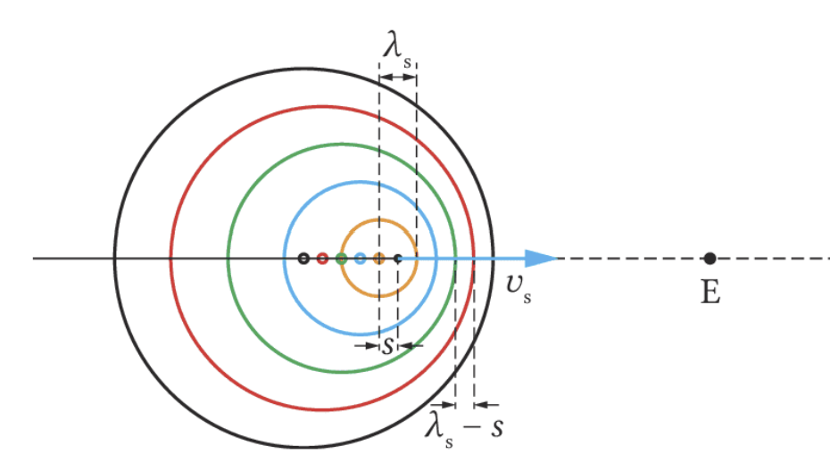
Wellenfronten stauchen sich in Fahrtrichtung.
Die Ausbreitungsgeschwindigkeit $c$ im Medium bleibt konstant, nur die gemessene Wellenlänge ändert sich. Für die empfangene Frequenz gilt:
$f_E = f_S \cdot \frac{1}{1 \mp \frac{v_S}{c}}$
Jetzt bewegt sich der Empfänger mit $v_E$ auf einen ruhenden Sender zu. Hierbei bleibt die räumliche Wellenlänge $\lambda_S$ völlig unbeeinflusst und konstant. Dagegen ändert sich relativ zum Empfänger aber die Ausbreitungsgeschwindigkeit der Wellenfronten, weil er ungebremst in sie „hineinfährt“ ($c_E = c + v_E$).
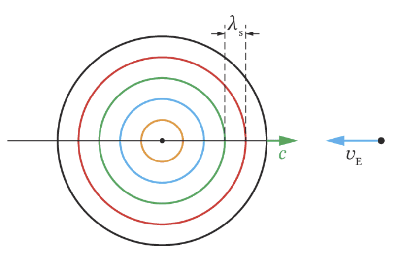
Empfänger durchquert die ruhenden Wellenfronten.
Da die Wellenlänge $\lambda_S$ konstant bleibt, die Relativgeschwindigkeit aber wächst, berechnet sich die empfangene Frequenz so:
$f_E = f_S \cdot \left(1 \pm \frac{v_E}{c}\right)$
Kombinationen bewegter Sender und Empfänger sowie Überschallknall-Rechnungen sind Leistungsfach-Vertiefung.
Durch die Kombination der beiden Bewegungen ergibt sich für einen Empfänger ($v_E$) und einen Sender ($v_S$), die sich beide gleichzeitig in Bewegung befinden, eine kombinierte Gleichung.
Bewegen sich Empfänger und Schallquelle aufeinander zu oder voneinander weg, so werden beide Effekte multipliziert:
$f_E = f_S \cdot \frac{1 \pm \frac{v_E}{c}}{1 \mp \frac{v_S}{c}}$
Das obere Vorzeichen steht stets für eine Annäherung, das untere für eine Entfernung. Für langsame Geschwindigkeiten ($v \ll c$) gilt näherungsweise: $\Delta f \approx f_S \cdot \frac{v_S}{c}$.
Kreuzt ein Flugzeug den Himmel mit Überschallgeschwindigkeit ($v > c$), so hat es den ersten und alle weiteren ausgesendeten Wellenberge bereits überholt.
Die ausgesandten Wellenberge besitzen eine gemeinsame Einhüllende – den sogenannten machschen Kegel. An allen Stellen am Boden, über die dieser V-förmige Mantel hinwegstreicht, hört man wegen der massiven konstruktiven Interferenz aller Wellenberge einen explosionsartigen Knall.
Tatsächlich „schleppt“ das Flugzeug seinen Knall auf dem Mantel dieses Kegels dauernd hinter sich her und erzeugt ihn umgangssprachlich gesehen nicht nur ein einziges Mal beim „Durchbrechen“ der Schallmauer.
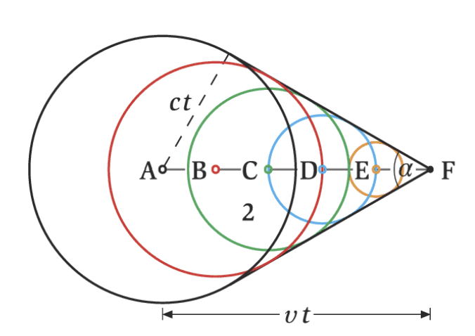
Entstehung des Machkegels bei Überschall ($v > c$).
Nun wechseln wir von den mechanischen Wellen und Schwingungen zur Elektrodynamik und Induktion. Ein klassischer elektromagnetischer Schwingkreis (LC-Schwingkreis) besteht aus einem Kondensator (Kapazität $C$) und einer Spule (Induktivität $L$).
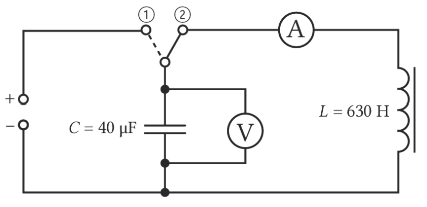
Lädt man den Kondensator auf und schließt ihn an die Spule an, kommt es zu einem fortwährenden Energieaustausch zwischen dem elektrischen Feld des Kondensators und dem magnetischen Feld der Spule.
Im elektromagnetischen Schwingkreis kommt es zu Schwingungen der am Kondensator anliegenden Spannung und der Stromstärke durch den Kreis. Diese beiden Schwingungen sind zeitlich stets um 90° phasenverschoben.
Über den Maschensatz ($U_C + U_L = 0$) ergibt sich folgende Differenzialgleichung der ungedämpften Schwingung:
$\ddot{Q}(t) = - \frac{1}{L \cdot C} \cdot Q(t)$
Als Lösungsfunktion dieser Gleichung bietet sich die Cosinusfunktion an, da diese – bis auf das negative Vorzeichen und den nach Kettenregel entstehenden inneren Faktor $\omega$ – absolut ihrer zweiten Ableitung entspricht. Mit dem Ansatz $Q(t) = \hat{Q} \cdot \cos(\omega \cdot t)$ erhält man:
Durch Einsetzen in die DGL erhält man letztlich $\omega^2 = \frac{1}{L \cdot C}$, woraus sich für die Frequenz $f$ und die Periodendauer $T$ direkt folgendes ergibt:
$f = \frac{1}{2 \pi} \cdot \frac{1}{\sqrt{L \cdot C}} \quad \text{bzw.} \quad T = 2\pi\sqrt{L \cdot C}$
Verändere Kapazität und Induktivität. Beobachte, wie die Elektronen erst an einer Kondensatorplatte gesammelt sind, dann durch Leitungen und Spule laufen und schließlich an der anderen Platte ankommen.
Wenn du C oder L größer machst, wird die Schwingung langsamer: In $T=2\pi\sqrt{LC}$ steht das Produkt $L\cdot C$ unter der Wurzel.
Gedämpfte elektromagnetische Schwingungen mit DGL und Dämpfungskonstante sind Leistungsfachstoff.
Bei einem idealen Federschwinger (wie auf dem Papier) würde das System ewig schwingen. Real nimmt die mechanische Amplitude aber aufgrund der Reibungsverluste mit der Zeit ab. Analog dazu nimmt auch beim elektrischen Schwingkreis die Amplitude im Laufe der Zeit durch den ohmschen Eigenwiderstand $R$ der Schaltung ab.
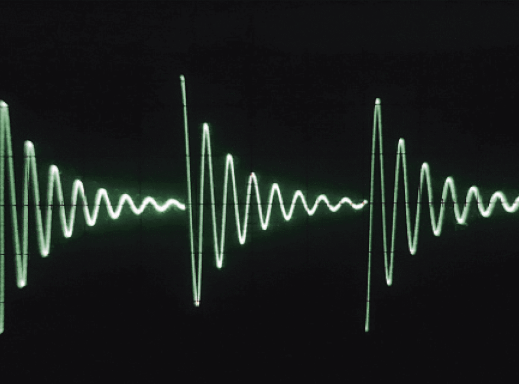
Dem Schwingkreis wird regelmäßig von außen durch einen Rechteckgenerator neue Energie zugeführt, sodass die Maxima periodisch neu starten und sichtbar bleiben.
Da nun auch der ohmsche Widerstand $R$ betrachtet werden muss, fällt auch an diesem eine Spannung $U_R = R \cdot I(t)$ ab. Die Maschengleichung ändert sich zu $U_C + U_L = U_R$. Eingesetzt führt dies zur charakteristischen DGL:
$\frac{1}{C} \cdot Q(t) + L \cdot \ddot{Q}(t) + R \cdot \dot{Q}(t) = 0$
Die analytische Bestimmung ist hier mathematisch aufwendiger. Der klassische Lösungsansatz ist eine periodische Schwingung, die mit einer e-Funktion exponentiell staucht, also abflacht:
$Q(t) = \hat{Q} \cdot e^{-\delta \cdot t} \cdot \cos(\omega \cdot t)$
Hierbei ist $\delta = \frac{R}{2L}$ die sogenannte Dämpfungskonstante. Für die neue Kreisfrequenz $\omega$ ergibt sich (durch Einsetzen der Ableitungen):
$\omega = \sqrt{\omega_0^2 - \delta^2} = \sqrt{\frac{1}{L \cdot C} - \frac{R^2}{4L^2}}$
Die Gleichung ist erstaunlich: Sie zeigt, dass die Frequenz im gedämpften Fall (ohne äußeren Zwang) stets minimal geringer ist als im ungedämpften Idealfall ($\omega_0$).
Wird der Term unter der Wurzel ($\omega_0^2 - \delta^2$) null, ist der Widerstand genau so groß, dass es physikalisch gar nicht mehr zur Schwingung kommt, sondern nur zu einem exponentiellen Abfall der Ladung. Diesen kritischen Punkt nennt man aperiodischen Grenzfall. Wird $R$ noch größer, spricht man vom Kriechfall.
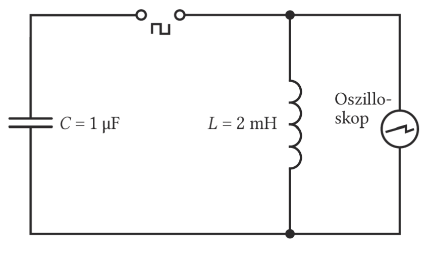
Typischer Versuchsaufbau mit Rechteckgenerator zum immer wiederkehrenden stupsenden „Anstoßen“ der gedämpften Schwingung (z.B. $L=2\text{mH}, C=1\mu\text{F}$).
Erzwungene Schwingung, Resonanzkurve und Resonanzkatastrophe gehören in dieser Tiefe ins Leistungsfach.
Was passiert, wenn man den Schwingkreis nicht nur einmalig auflädt (und dann abklingen lässt), sondern eine stetige, sinusförmige Wechselspannung als Zwang (Erreger) von außen anlegt? Man ersetzt den Rechteckgenerator durch einen regelbaren Sinusgenerator. Zur Beobachtung misst man sodann die Stromstärke im Kreis in Abhängigkeit zur extern angelegten Erregerfrequenz.
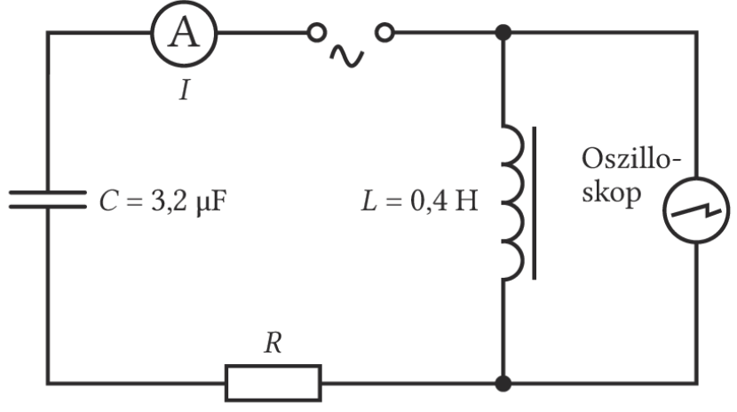
Nach einer kurzen Einschwingzeit ergibt sich eine ungedämpfte Schwingung im LC-Glied, deren Frequenz mit der des Sinusgenerators zwangsläufig übereinstimmt. Trägt man die maximal gemessene Stromstärke über der Frequenz systematisch auf, erhält man eine Resonanzkurve.
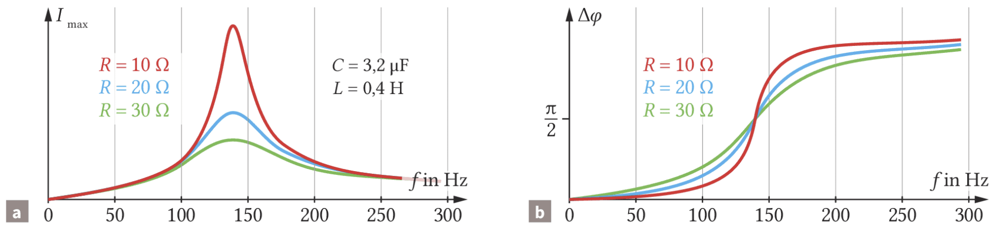
Die oben visualisierte Kurve besitzt ein massiv steiles Maximum. Dieses ist umso radikaler und ausgeprägter, je kleiner der dämpfende Widerstand $R$ im Kreis gewählt wird. Die zugehörige Frequenz, bei der dieses Schwingungsmaximum auftritt, entspricht genau der sogenannten Eigenfrequenz des Systems, kalkulierbar durch die thomsonsche Schwingungsgleichung.
Die erzwungene kapazitive bzw. induktive Schwingung innerhalb des LC-Glieds hinkt im genauen Resonanzfall der von außen angelegten Erregerspannung um eine präzise Viertel-Periode (90° Phasenverschiebung) hinterher.
Wird ein zu Eigenschwingungen fähiger Wellenträger mit genau seiner idealen Eigenfrequenz von außen angeregt, so tritt Resonanz ein. Diese Resonanz tritt aber nicht nur elektrisch auf. Wird ein mechanischer Aufbau (wie eine Hängebrücke) dauerhaft mit seiner kritischen Eigenfrequenz angeregt, wachsen die Schwingungsbäuche durch die ständig gepumpte Energiezufuhr ungebremst ins fast grenzenlose an.
Die nagelneue Brücke musste bereits 3 Tage nach der feierlichen Eröffnung im Jahr 2000 aufgrund gefährlicher Resonanzkatastrophen durch den im Gleichtakt marschierenden Menschenstrom geschlossen werden. Erst nach Einbau massiver und aufwendiger Flüssigkeitsdämpfer durfte die verhasste "Wackelbrücke" wieder gefahrlos betreten werden.
Damit Konstrukte wie Brücken intakt bleiben, darf eine Eigenschwingung immer nur soweit aufschaukeln, bis die in der Periode hineingesteckte Energie gleich groß ist wie die an Dämpfungssysteme abgegebene Verlust-Energie.
Bisher haben wir den Schwingkreis als ein geschlossenes, an den Ort gebundenes System betrachtet. Wie aber entsteht daraus eine elektromagnetische Welle, die sich weit durch den leeren Raum ausbreiten kann?
Zunächst ruht ein Magnet. Bewegen wir in seinem Magnetfeld einen Leiterstab mit der Geschwindigkeit $v$ nach links, induziert das Magnetfeld dort im Leiter eine Spannung $U_{ind}$. Dieselbe Spannung entsteht (nach dem Relativitätsprinzip), wenn der Stab ruht und der Magnet mit der Geschwindigkeit $v$ nach rechts bewegt wird. Ein bewegtes (sich zeitlich änderndes) Magnetfeld erzeugt also immer ein elektrisches Feld im Raum.
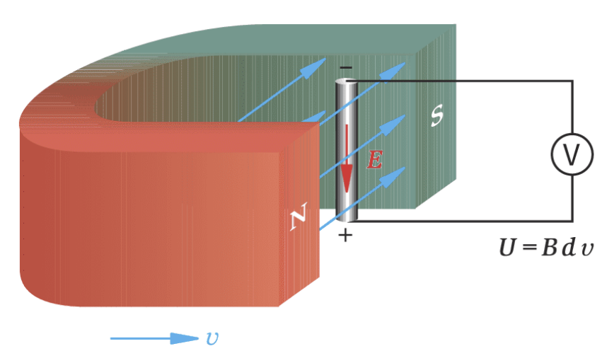
Der schottische Physiker James Clerk Maxwell zeigte ferner: Auch wandernde elektrische Felder rufen auf exakt analoge Weise selbst Magnetfelder hervor! Bewegt sich z. B. ein geladenes System (wie ein Kondensator) nach rechts, so erzeugen die mit ihm bewegten Ladungen real fließende Ströme. Diese Ströme erzeugen wiederum ein typisches Magnetfeld, das senkrecht zu den elektrischen Feldlinien verläuft.
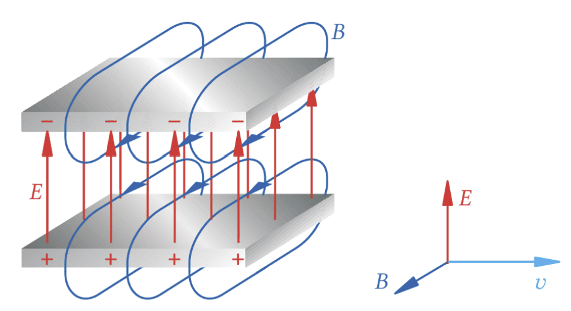
Entfernt man in Gedanken die Kondensatorplatten beliebig weit voneinander oder lässt sie am Erzeuger gar ganz weg, bleibt die Kausalität im Raum dennoch stets identisch: Das Magnetfeld ($B$) wird allein durch das sich wandelnde elektrische Feld ($E$) erzeugt.
Das Ergebnis dieser Überlegungen ist revolutionär: Das wandernde magnetische Feld induziert ein elektrisches Feld und dieses wiederum umgehend ein mitwanderndes, magnetisches Feld.
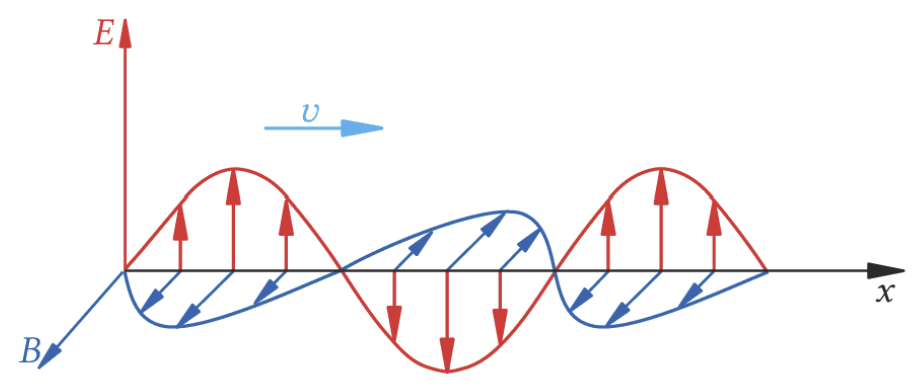
So breitet sich die Welle ewig frei und stabil aus, auch wenn der ursprüngliche Erreger (Dipol) aufgehört hat zu schwingen. Dieser Vorgang bedarf keines mechanischen Trägermediums und findet fantastisch auch im totalen Vakuum des leeren Weltraums statt.
Wenn sich die Felder gegenseitig erzeugen und tragen, dann kann man folglich annehmen, dass die Energiedichten des magnetischen und elektrischen Feldes an jedem Punkt im Raum stets gleich groß bleiben müssen ($\rho_{el} = \rho_{mag}$).
$\frac{1}{2} \varepsilon_0 \varepsilon_r E^2 = \frac{1}{2 \mu_0 \mu_r} B^2$
Maxwell kombinierte dies (zusammen mit der Näherung $E = B \cdot v$) und konnte die Ausbreitungsgeschwindigkeit theoretisch exakt berechnen:
Wandernde elektrische und magnetische Felder ($\vec{E}$ und $\vec{B}$) erzeugen sich wechselseitig. Sie sind stets in Phase und schwingen auf den Achsen senkrecht aufeinander und senkrecht zur Ausbreitungsrichtung.
Im luftleeren Vakuum ($\varepsilon_r \approx 1, \mu_r \approx 1$) resultiert daraus stets die weltbekannte Konstante $c$:
$c = \frac{1}{\sqrt{\varepsilon_0 \cdot \mu_0}} \approx 2,998 \cdot 10^8 \, \frac{m}{s} \approx 3,0 \cdot 10^8 \, \frac{m}{s}$
Elektromagnetische Wellen breiten sich (wie der Name es verspricht) exakt mit Lichtgeschwindigkeit aus, da das sichtbare Licht letztlich absolut nichts anderes ist, als genau solch eine Welle bestimmten Spektrums!
Im Vakuum ist $c$ konstant. Deshalb bedeutet eine größere Frequenz stets eine kleinere Wellenlänge.
Alle Bereiche des Spektrums bestehen aus denselben gekoppelten E- und B-Feldern. Sie unterscheiden sich durch Frequenz, Wellenlänge und damit durch ihre Wechselwirkung mit Materie.
| zunehmende Frequenz | typische Anwendung oder Beobachtung |
|---|---|
| Radiowellen | Rundfunk, Funkkommunikation |
| Mikrowellen | Radar, WLAN, Mikrowellenofen |
| Infrarot | Wärmestrahlung, Fernbedienung |
| sichtbares Licht | Sehen, Beleuchtung, optische Datenübertragung |
| Ultraviolett | Fluoreszenz; kann Haut und Augen schädigen |
| Röntgenstrahlung | medizinische Bildgebung; ionisierend |
| Gammastrahlung | Kernprozesse, Strahlentherapie; stark ionisierend |
Merke: Von Radiowellen zu Gammastrahlung steigen Frequenz und Photonenenergie, während die Wellenlänge abnimmt. Die Grenze zwischen benachbarten Bereichen ist nicht scharf.
Abstrahlung am Dipol ist nach der aktuellen Planung kein verbindlicher Basisfachinhalt. Nutze diesen Abschnitt höchstens als LF-Vertiefung oder Ausblick.
Wie genau „verlässt“ die elektromagnetische Welle beim Erschaffen nun ihren Sender? Das Verhalten lässt sich sehr gut an einem Sendedipol skizzieren, der effektiv aus zwei in entgegengesetzte Richtungen ragenden linearen Leitern besteht.
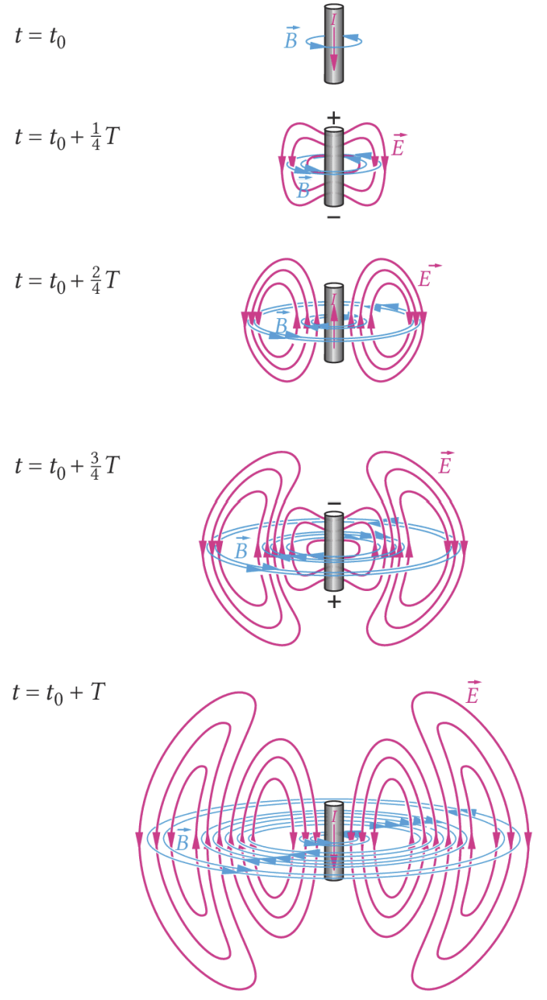
Ein Zyklus am offenen Dipol. Generiert nach den Originalaufschrieben des Erstdemonstrators Heinrich Hertz.
Die Resonanz-Eigenfrequenzen $f_k$ der hochfrequenten Schwingungen innerhalb eines leitenden Sendestabes verhalten sich analog zur etablierten Akustik. Sie variieren anhand seiner physischen Drahtlänge $l$ sowie der finalen Lichtgeschwindigkeit $c$. Es gilt:
$f_k = \frac{k \cdot c}{2 \cdot l} \quad \text{mit} \quad k = 1, 2, 3, \ldots$
Der physikalisch durchgerechnete mikroskopische Verlauf der verschlungenen Raum-Feldlinien ergibt sich in der Hochschulphysik mathematisch aus den vier berühmten differentiellen Maxwell-Gleichungen, welche gänzlich alle elektrischen und magnetischen Makro-Phänomene in einem einheitlichen Gerüst vereinen.